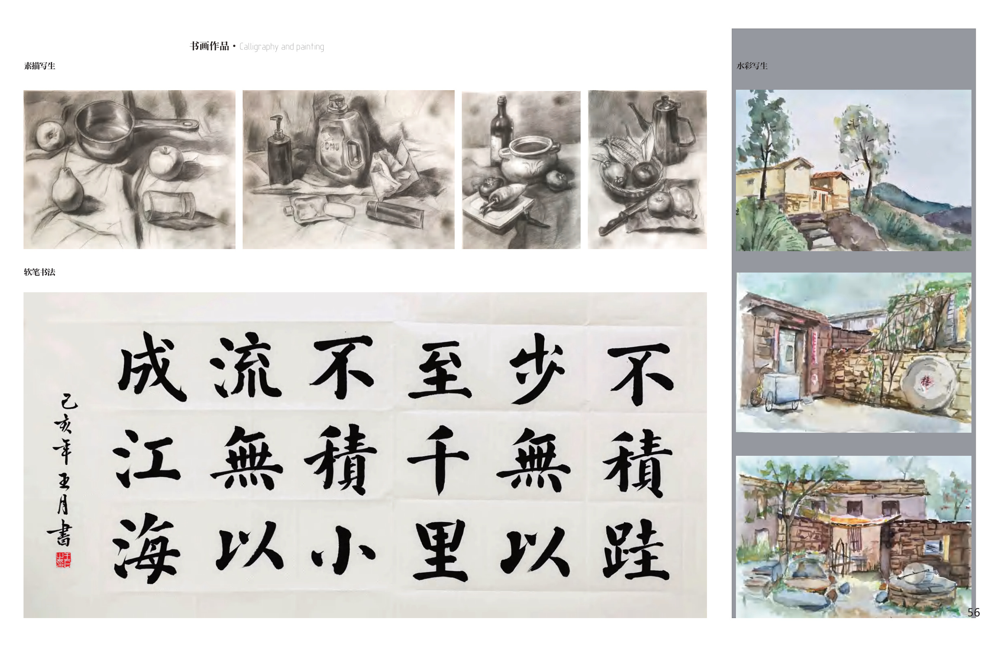
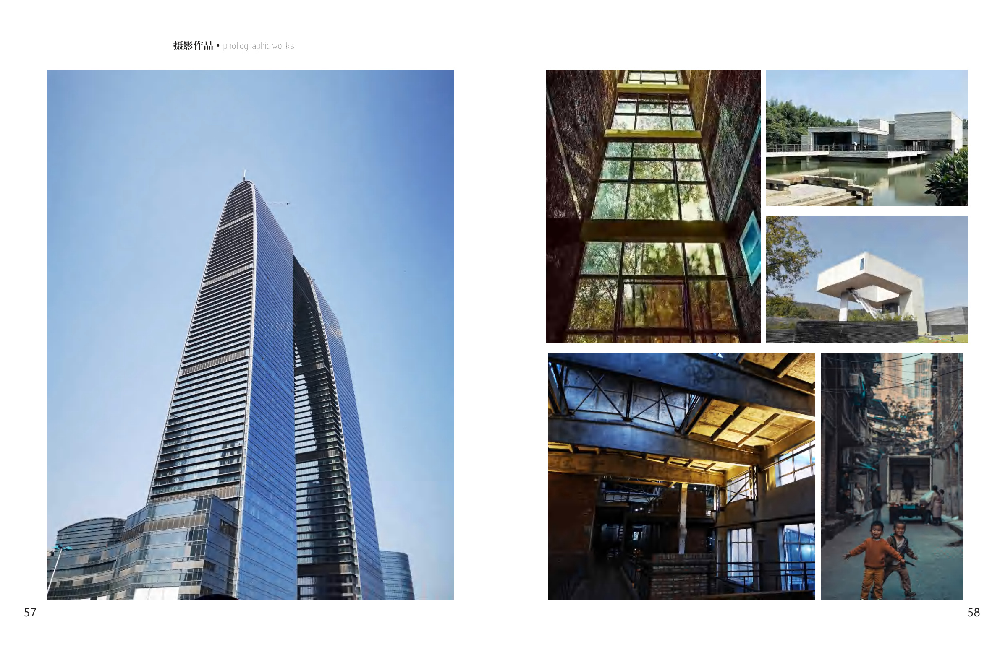

One thing.
At a time.
MAKE SPACE FOR FOCUS.
城市漫游VR.doc
AIGC视频.doc
个人介绍.doc
PERSONAL INTRODUCTION / YUER
你好，我是王月。
从建筑空间到屏幕里的交互，我喜欢把想法做成可以被看见、被体验的东西。
建筑学的学习与研究，让我习惯从人的感知、行为和使用场景出发。现在，我也在探索 AI 在设计中的应用，把这些思考带进数字产品与交互实践。
A little curious. Always making.
1. 个人简历
教育经历、研究与项目实践。
2. 兴趣爱好
书法、绘画与摄影，记录工作之外的日常。


— A little curious. Always making. —
YUER / PERSONAL DESKTOP